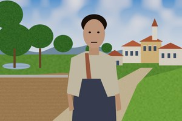

Signature · 100%Sony A1 · A1M02214 · ISO 200 · 1/250 · f/2.0
Signature · 100%Sony A1 · A1M02214 · ISO 200 · 1/250 · f/2.0Lakeside
2026-11-25 · synthetic sceneSignature · 100%Sony A1 · A1M02214 · ISO 200 · 1/250 · f/2.0Input
Main

01
Match
02
Output
100%
Signature · 100%Sony A1 · A1M02214 · ISO 200 · 1/250 · f/2.0